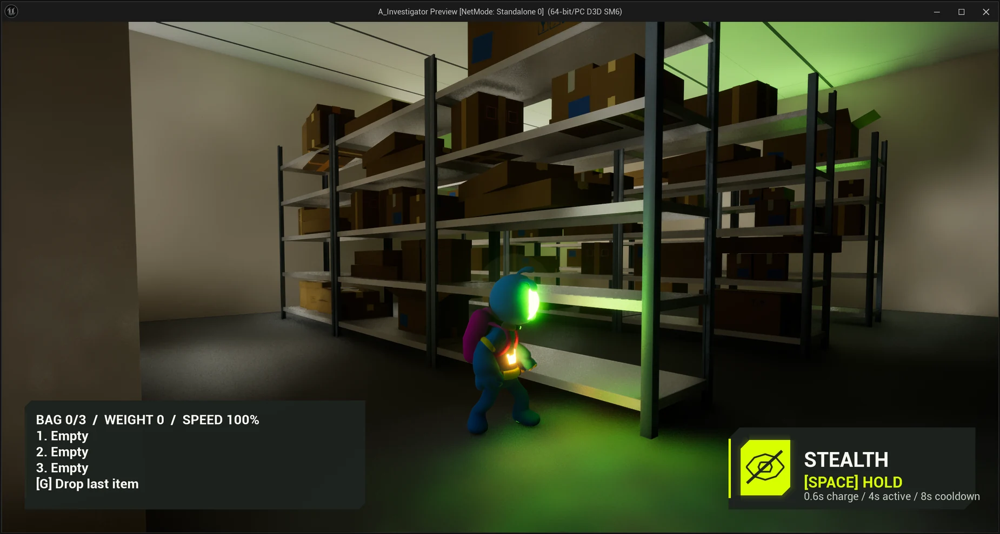
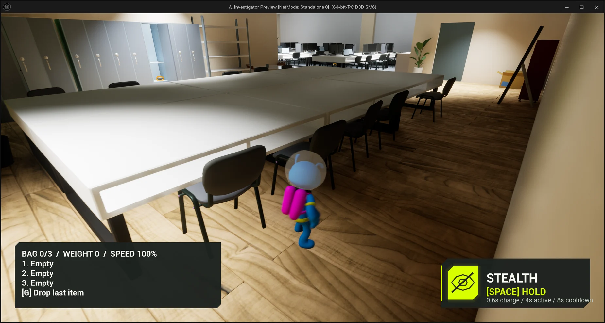
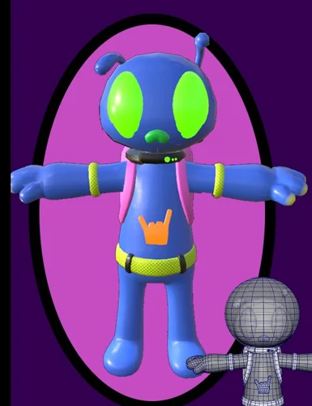

Third-person stealth game
The Nonsensians
An alien intern needs fieldwork credits. Tonight’s assignment is to slip into a human office, collect a few specimens and get past the man in the bowler hat.

Read case study
Field notes from Earth
What would a visiting researcher make of a coffee cup? To this intern, coffee is the substance that makes adult humans work. I built the game around those small misunderstandings, with familiar objects to investigate and a patrol to slip past.

From the intern’s height, a meeting table becomes a hiding place.
Researcher & guard
The intern carries twin pink air tanks to breathe on Earth. Across the office, the Iron Gentleman is easy to spot by his bowler hat and outstretched black gloves.

Drag to rotate